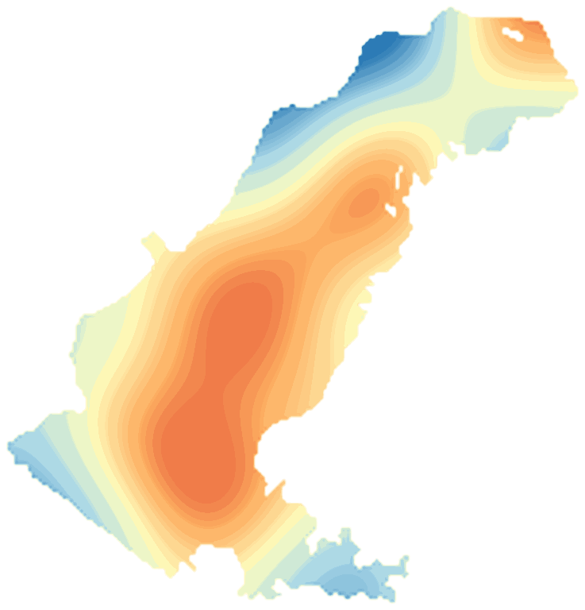

LakeScope › MS
Ross Barnett Reservoir today
Updated 2026-11-21 - Atlas Labs
Some algae possible, 58°F water, level steady, 1 ft below normal, calm this morning.
Water level
295.71 ft
USGS gauge 02485600 - 2026-11-21
7-day trend: steady (-0.14 ft). Compared with normal for this date: -1.0 ft (same weeks, 2016-2025).
Water clarity and algae
Some algae possible Last clear view: yesterday.
Surface temperature
58°F
seen from space on 2026-11-19

Weather, next 3 days
| Day | Sky | High / low | Wind | Rain |
|---|---|---|---|---|
| Saturday | Sunny | 74 / 57°F | 10 mph E | 1% |
| Sunday | Sunny | 75 / 60°F | 5 mph SSW | 1% |
| Monday | Slight Chance Rain Showers then Mostly Cloudy | 66 / 53°F | 15 mph N | 23% |
Sunrise 06:35 - sunset 16:56 - Waxing gibbous. National Weather Service.
Get the LakeScope app: alerts and the 3-D view of Ross Barnett Reservoir